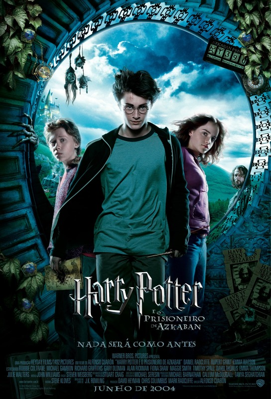

Caillou.
Não me lembro da primeira vez que eu assisti, tinha só 4 anos, mas lembro de ter umas músicas no DVD, e eu tinha medo de uma música dos ratos por algum motivo
Passava na TV Cultura, assistia antes de ir pra escola de manhã
Não lembro onde exatamente ouvi essa música, mas lembro que eu era viciado quando mais novo
Um dos meus jogos favoritos, unico jogo que eu tinha no N64, mas baixo emulador de vez em quando pra matar saudade
Um dos jogos que eu menos avancei no PS2, lembro de ter travado em uma parte, provavelmente por não saber inglês
Passava no bom dia & companhia, assistia direto, não lembro se era esse ou outra versão, mas era um ben 10
Assistia todo dia antes de ir pra escola a tarde, acredito que assisti todos os episódios, mas não lembro de quase nada (memória de peixe)
Outra coisa q assistia, normalmente quando não tinha aula porque passava de tarde
Assisti logo quando saiu, acho que foi a primeira vez que assisti um filme interativo, achei muito bom
Decidi assistir todos os filmes de Harry Potter em 2019, mas confesso que não lembro de muita coisa
